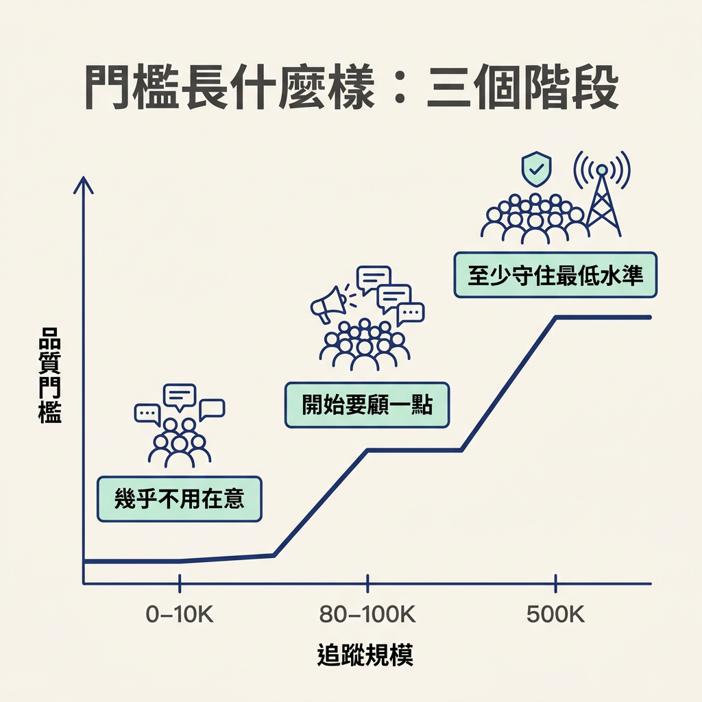
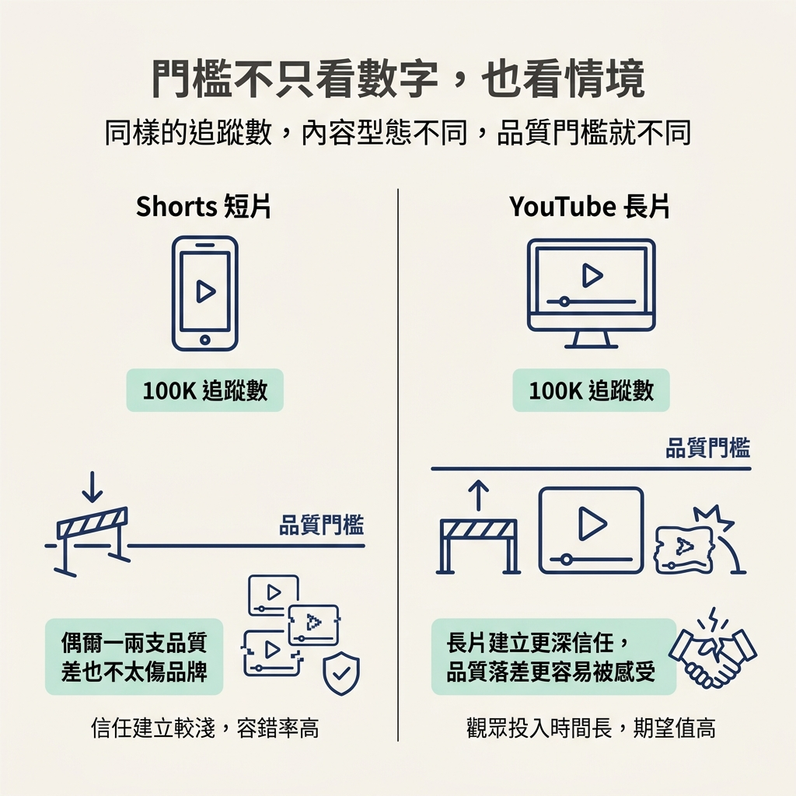

了解品質門檻如何隨追蹤數上升，並判斷自己現在該不該優先顧品質。
上一節我們拆掉了「品質還不夠好，就不能發布」這道禁令。接著你可能會問：那品質是不是永遠都不用管？
講師提醒，品質不是完全不重要，而是有一條會隨追蹤數上升的門檻。這一節會用追蹤規模和內容型態，幫你判斷自己現在該把心力放在哪裡：是先多做實驗，還是開始守住基本品質。
先看大方向：剛起步時，幾乎沒有人在意你每支作品的好壞；等追蹤規模變大，觀眾對你的作品開始有期待，品質門檻也會慢慢提高。講師把它分成幾個階段：
| 追蹤規模 | 該不該在意品質 | 講師的說明 |
|---|---|---|
| 0–10K | 幾乎不用 | 老實說，沒什麼人真的在意你發的東西，頂多是朋友、家人看一點。就算發出自己做過最差的一支，通常也還好。 |
| 80–100K | 開始要顧一點 | 這時品質開始值得留意，但仍然要看情境。 |
| 500K | 至少要達到最低水準 | 你已經有自己的品牌，在觀眾群裡也算有知名度，發布的內容至少要守住基本門檻。 |

門檻會隨著規模改變，關鍵在於觀眾的注意力。追蹤數在 0–10K 時，觀眾基數還小，誰會看到每一支作品，幾乎不用太擔心。這時實驗的成本最低：你可以試題材、試形式、試自己的表達方式。就算做得不理想，也很適合當成練習。
等你有了品牌，也有固定觀眾，情況就不同了。觀眾開始期待你的下一支作品，品質落差也更容易被發現。講師舉例，觀眾可能會覺得你的影片「不再好用、不再好聽」。如果這種印象逐漸形成，他們就可能慢慢不再觀看。
這條門檻不是誰訂下來的，而是觀眾的期待隨著關注增加，自然形成的。
還有一點容易忽略：判斷品質門檻時，不能只看追蹤數，也要看內容型態。講師舉例，如果你主要發布 Shorts，即使有 100K 追蹤，偶爾一兩支影片品質比較差，大概也不會傷到品牌或信任。
但同樣是 100K 追蹤，放在 YouTube 長片上就不太一樣。長片會建立更深的信任：觀眾坐下來聽你講一段時間，你端出什麼內容，他們感受得更清楚。因此，「100K 該不該顧品質」沒有一個適用所有人的答案，還得看平台和內容形式。

講師用自己的頻道說明這條線。他目前在 YouTube 大約有 190,000 位訂閱者。如果接下來三到五支影片，都是音訊很糟、內容也有些過時的低品質作品，他認為這會傷害 RoboNuggets 品牌的信任。觀眾可能會開始覺得他的內容不再好用，接著慢慢不再觀看。
因此，他認為到了這個階段，至少要避免影片「聽不到聲音」，或是「講的東西沒什麼用」。這也接回上一節的重點：品質不一定要做到非常精緻，但至少要守住最低標準。
你可以用下面幾個問題，快速判斷自己目前的狀況：
如果追蹤規模還小，觀眾對你的作品也還沒有太多期待，就可以先把品質排在比較後面，專心增加產量、嘗試不同做法。等規模和觀眾期待提高，再回頭加強品質也不遲。
品質不是永遠不用管，而是有一條會隨追蹤數上升的門檻。0–10K 時幾乎沒人在意，是最適合實驗的階段；80–100K 開始要留意品質，但仍要看情境，例如 Shorts 通常比 YouTube 長片寬鬆；到了 500K，至少要守住基本水準。判斷的關鍵是追蹤規模和內容型態，而不是只問「品質重不重要」。
知道什麼時候該開始在意品質後，下一個問題就是：品質到底指什麼？下一節會給「品質」一個你實際用得上的定義。